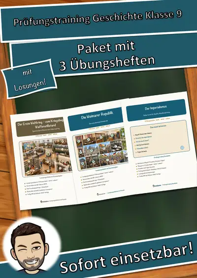
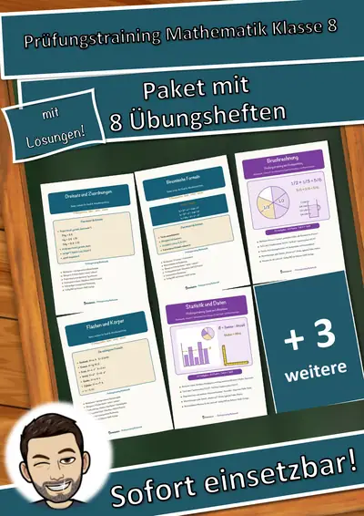

Aktiv und Passiv – Prüfungstraining Deutsch (Klasse 8)
Prüfungstraining Deutsch: Aktiv und Passiv – gezielte Vorbereitung auf Quali und Abschlussprüfung
Dieses kompakte Übungsheft trainiert alle prüfungsrelevanten Grundlagen zu Aktiv und Passiv – von Merkkästen über Beispiele bis zum punktebewerteten Prüfungsteil im Prüfungsstil. Ideal für die gezielte Wiederholung, den Wochenplan, Vertretungsstunden, Freiarbeit, Nachhilfe und die Prüfungsvorbereitung im Fach Deutsch (Grammatik/Sprache untersuchen).
Inhalt:
- Hinweise für Lehrkräfte mit Kompetenz- und Lehrplanbezug
- Grundlagen mit Merkkästen: Unterscheidung Aktiv/Passiv, Bildung des Passivs (werden + Partizip II), Umformen von Aktiv in Passiv, Zeitformen im Passiv und die Verwendung
- Übungen in drei Niveaustufen (leicht ★ / mittel ★★ / schwer ★★★)
- Prüfungsteil im Prüfungsstil mit 25 Punkten und Bewertungsschlüssel
- Ausführlicher Lösungsteil mit korrekten Sätzen (nur für die Lehrkraft)Kompetenzen:
- Aktiv und Passiv unterscheiden
- das Passiv mit werden + Partizip II bilden
- Sätze von Aktiv in Passiv umformen (und umgekehrt)
- das Passiv in verschiedenen Zeitformen bilden
- erklären, wann das Passiv sinnvoll ist
Format:
Das Material liegt in einer farbigen Version UND als drucksparende Schwarz-Weiß-Variante vor. Alle Beispielsätze sind frei erfunden.
Umfang: 8 Seiten (Hinweise, Grundlagen, Übungen, Prüfungsteil, Lösungen).
FachDeutsch
KlasseKl. 8
SchulformSek I Mittlere Schulform
MaterialartArbeitsblätter, Fördermaterial/Inklusion, Text
Ähnliche Materialien

Materialpaket Prüfungstraining Deutsch Klasse 8 – Grammatik und Rechtschreibung: 6 Übungshefte mit Prüfungsteil und Lösungen

Materialpaket Prüfungstraining Geschichte Klasse 8: 5 Übungshefte mit Prüfungsteil und Lösungen

Materialpaket Prüfungstraining Deutsch Klasse 9: 4 Übungshefte mit Prüfungsteil und Lösungen

Materialpaket Prüfungstraining Deutsch Klasse 8 – Schreiben und Literatur: 6 Übungshefte mit Prüfungsteil und Lösungen

Materialpaket Prüfungstraining Geschichte Klasse 9: 3 Übungshefte mit Prüfungsteil und Lösungen

Materialpaket Prüfungstraining Biologie Klasse 9: 6 Übungshefte mit Prüfungsteil und Lösungen

Materialpaket Prüfungstraining Erdkunde Klasse 8: 6 Übungshefte mit Prüfungsteil und Lösungen
